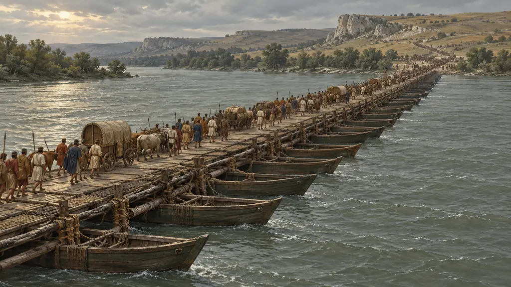
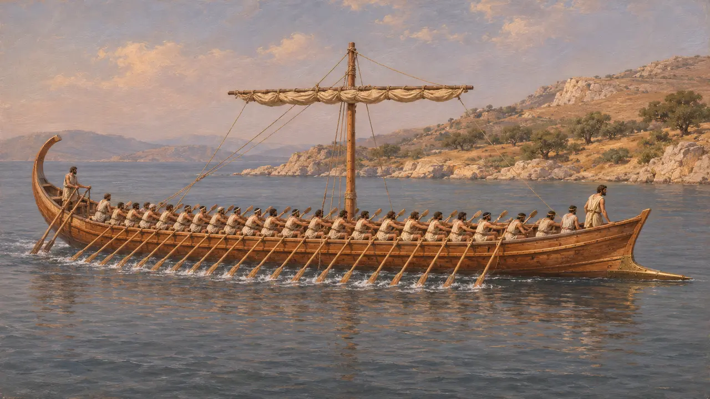
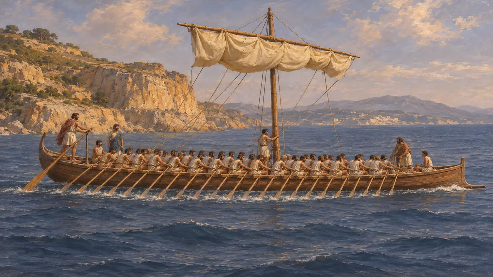
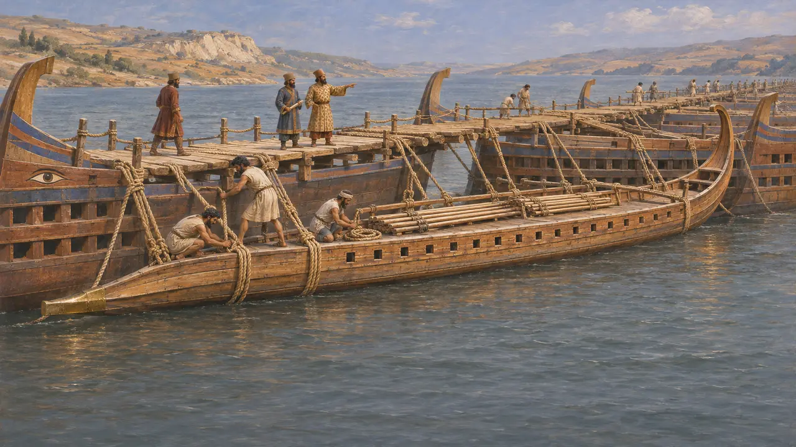
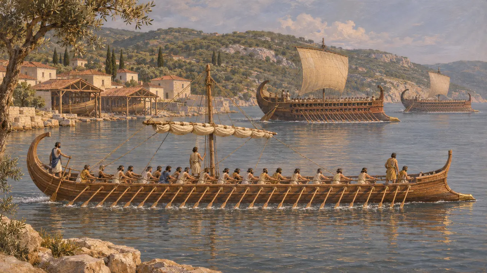
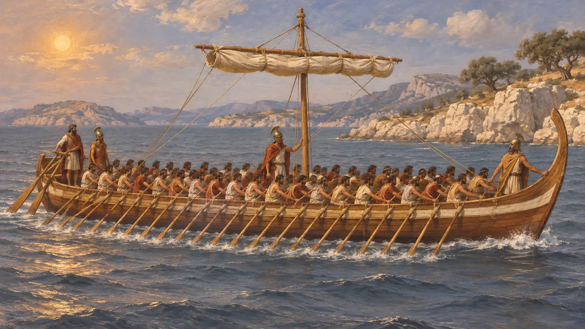

Энциклопедия › Воины и корабли

Пентеконтера
Греческий и финикийский пятидесятивёсельный военный корабль, пригодный и для дальних плаваний, ок. 700–480 гг. до н. э.
Пентеконтера — длинный узкий гребной корабль, на вёслах которого сидело около пятидесяти человек, примерно по двадцать пять с каждого борта. До распространения триеры в конце VI века это был главный военный корабль и судно дальнего плавания греческих и финикийских мореходов. Во времена Дария и Ксеркса пентеконтеры всё ещё служили в персидских флотах и шли в основу наплавных мостов.
В игре: В игре пентеконтеры показаны у моста через Истр и вдоль побережий. Геродот не называет типы кораблей, из которых был построен мост Дария через Истр, поэтому пентеконтеры здесь — обоснованная реконструкция, а не засвидетельствованный факт.

Длинный корабль на пятьдесят гребцов
Свидетельства эпохиГреческая вазопись VIII–VI веков изображает длинные беспалубные корабли с одним рядом гребцов и заострённым тараном на носу. Ассирийские дворцовые рельефы из Ниневии около 700 года показывают финикийские гребные боевые корабли, некоторые с гребцами в два яруса, что позволяло укоротить корпус при той же команде. Современные реконструкции предполагают, что одноярусная пентеконтера имела в длину, вероятно, около 30 метров или больше.
L. Casson, Ships and Seamanship in the Ancient World, 1971

Плавания фокейцев и флот Поликрата
Античное свидетельствоПо словам Геродота, фокейцы из Ионии первыми из греков совершали дальние плавания. Он пишет, что они ходили в Адриатику, Иберию и Тартесс на пентеконтерах, а не на круглых торговых судах. Он также сообщает, что Поликрат, тиран Самоса, построил своё морское могущество на сотне пентеконтер, хотя корабли, посланные им на помощь Камбису против Египта в 525 году, были триерами.
Herodotus 1.163; 3.39; 3.44

Корабли на Истре и Геллеспонте
Античное свидетельствоГеродот пишет, что ионийский флот вошёл в Чёрное море и навёл мост через Истр для скифского похода Дария около 513 года, но не уточняет, из каких кораблей был составлен мост. О мостах Ксеркса через Геллеспонт в 480 году он прямо говорит, что их связали из пентеконтер и триер. Пентеконтеры он также называет среди множества мелких судов, следовавших за флотом Ксеркса.
Herodotus 4.89; 7.36; 7.97

Когда на смену пришла триера
СпорныйПо словам Фукидида, греческие флоты до Греко-персидских войн состояли в основном из пентеконтер и длинных судов. Первые крупные флоты из триер, на Сицилии и на Керкире, он относит ко времени незадолго до смерти Дария. Историки спорят, как быстро произошла перемена и кто её направлял. Х. Т. Валлинга утверждал, что большие флоты триер были во многом персидским творением начиная с Камбиса и оплачивались Царём; другие отводят большую роль греческим и финикийским государствам.
Thucydides 1.13-14; H. T. Wallinga, Ships and Sea-Power before the Great Persian War, 1993

Пятьдесят гребцов героической эпохи
Позднейшая легендаВ гомеровском Каталоге кораблей Филоктет ведёт семь кораблей, на каждом из которых гребут пятьдесят человек. Позднейшая греческая традиция приписывала «Арго» команду примерно из пятидесяти героев. Эти поэмы сложились спустя долгое время после любого реального похода и показывают лишь то, что греки представляли своих героев плывущими на пятидесятивёсельных кораблях.
Homer, Iliad 2.718-720
Источники
- Herodotus, Histories 1.163; 3.39; 3.44; 4.89; 7.36; 7.97
- Thucydides 1.13-14
- L. Casson, Ships and Seamanship in the Ancient World, 1971
- H. T. Wallinga, Ships and Sea-Power before the Great Persian War, 1993
- J. S. Morrison, J. F. Coates and N. B. Rankov, The Athenian Trireme, 2000
- Homer, Iliad 2